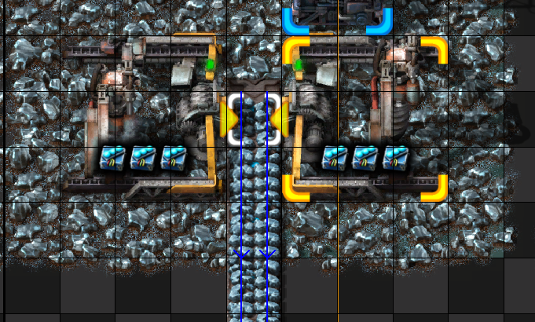
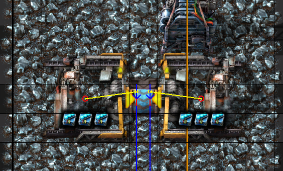
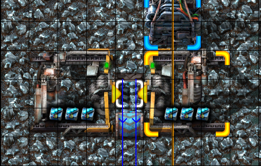
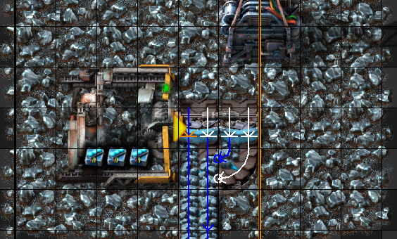
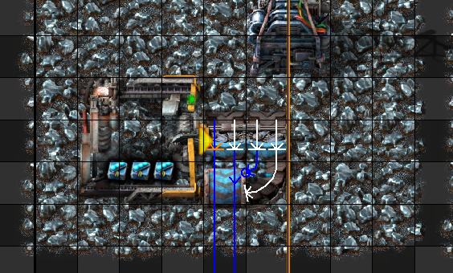
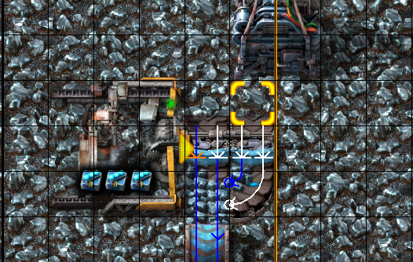
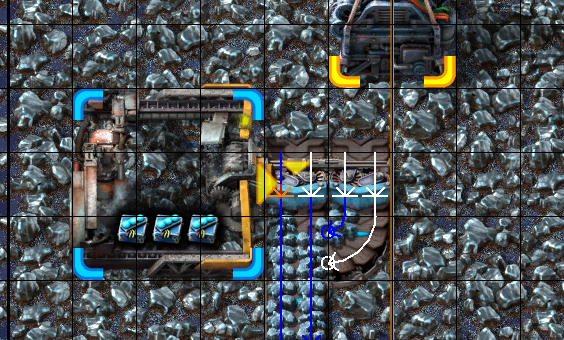
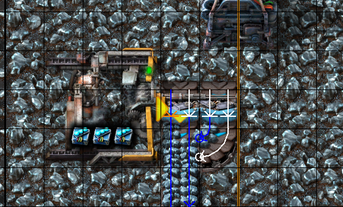
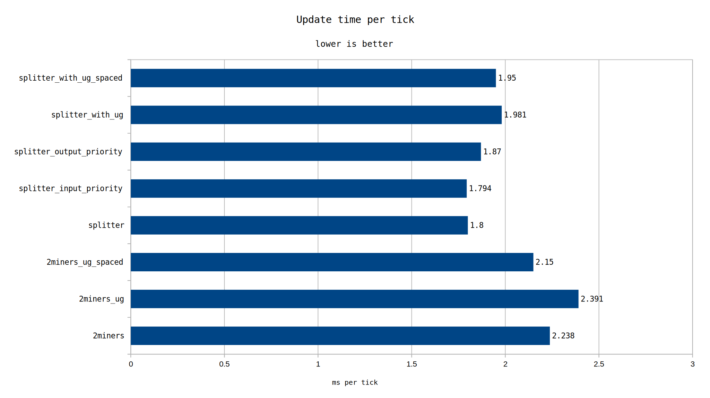

It is possible to mine directly into a splitter and then sideload the two ore streams into one full belt. It is not known if that performs better, worse, or the same as just using 2 miners to fill the belt.
The test consists of otherwise identical designs cloned to a large amount of production (roughly the amount of ore needed for 50k SPM). A few variations of each design are posed to further refine the hypothesis.
Mining productivity was set high enough that a single miner could sustain a full blue belt worth of output, but not excessively higher than that level.

The first of these designs is a simple 2 miner setup

Two miners, but directly into an underground belt

Two miners, with one normal belt before the underground belt
The expectation of adding underground belts is to force the belt insertion transport line lookup closer to the point of insertion. One of these puts underground belts right at the miner, and one adds an additional space before the underground. It was observed that by having the underground right at the miner, the wakeup list debug visualization would flicker as the miner operated.

Basic splitter based setup

Adding undergrounds after the splitter and sideload

Adding undergrounds after the splitter with an additional buffer tile

Adding input priority

Adding output priority
The competing designs and variants are mining straight into a splitter. One variant is to add an underground belt to force the transport line lookup point sooner. This comes with two options, since it looks like the closest possible underground position results in the wakeup list debug visualization flickering. Another variant adds input priority to the near side of the miner, and the final variant adds output priority to the splitter.
Each design was saved in a map and then each of the maps was benchmarked using the inbuilt Factorio benchmark 3 times at 1000 ticks each. Care was taken to put each design in the same starting position before cloning to minimize the chance of performance effects due to chunk positioning.

All maps will be uploaded here.
When producing/consuming a full blue belt, use a single miner mining into a splitter to achieve the best performance.
There are additional factors not accounted for which might affect these results. One: what happens at much higher mining productivity levels (ie. far more than necessary to saturate a blue belt). Two: does this performance profile hold true when a belt is not fully utilized? There are possibly more factors not being thought of as well.